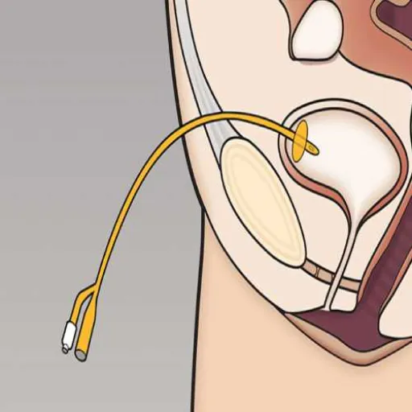

أنبوب فغر المثانة
فغر المثانة او أنبوب تصريف المثانة عبر الجلد هو إجراء طفيف التوغل يتم فيه وضع بربيش في المثانة البولية من الجلد جراحيا لتصريف البول من خلال أنبوب. و هو ضروري للمرضى غير القادرين على التبول بشكل طبيعي بسبب انسداد مخرج المثانة دون القدرة على وضع قسطرة في الإحليل أو الحالات الطبية الأخرى التي يكون فيها إصابة للإحليل مما يؤدي إلى احتباس البول.
متى أحتاج لأنبوب فغر المثانة؟
دواعي إجراء أنبوب فغر المثانة تشتمل على حاتين أساسيتين كما يلي:
- فغر المثانة فوق العانة هو إجراء جراحي طفيف التوغل؛ وشائع الاسخدام في الطوارىء، و يتم إجراؤه عادة لعلاج احتباس البول الحاد بعد عدم نجاح محاولة قسطرة مجرى البول.
- وهو إجراء شائع الإستخدام أيضاََ عندما تكون هناك حاجة للقسطرة لفترات طويلة. حيث أن القسطرة في مجرى البول "القسطرة الإحليلية" لها العديد من المشاكل اذا بقيت لفترات طويلة. لذلك يعتبر فغر المثانة فوق العانة (أي أسفل البطن) خياراً أفضل لانه أقل من ناحية المضاعفات.
ما هي مخاطر أو مضاعفات إجراء أنبوب فغر المثانة بمساعدة التصوير بالألتراساوند؟
- وجود الدم في البول أو النزيف.
- التهاب بكتيري في المثانة أو الحوض
- لألم في منطقة أسفل البطن
- نادراً إصابة القولون، خاصةََ عند اللذين سبق لهم إجراء عمليات في البطن أو الحوض.
ما الإحتياطات التي يستحب الإلتزام بها ما بعد وضع بربيش المثانة؟
- سيقوم استشاري الكلى والمسالك البوليه بشرح كيفية العناية بأنبوب فغر المثانة.
- يفضل عدم العودة للميعات لعدة أيام بعد وضع بربيش فغر المثانة.
- يفضل الإكثار من شرب الماء و السوائل
- إذا كان لديك دم مع البول فلا داعي للقلق لإن ذلك يتوقف خلال عدة أيام بعد وضع أنبوب فغر المثانة.
الخلاصة
أنبوب فغر المثانة فوق العانة الموجه بالموجات فوق الصوتية آمن وفعال ويرتبط ببعض المضاعفات التي تتحسن من ذاتها دون أي تدخل. و عادة ما يتم وضع بربيش فغر المثانة في الطوارىء و بالإمكان وضعه في عيادة جراحة الكلى والمسالك تحت مراقبة الألتراساوند؛ حيث أن التصوير بالألتراساوند يجعل رؤية المثانة أكيدة ويتجنب الإصابة للأعضاء الأخرى مثل القولون.
قائمة المراجع:
- Aguilera PA, Choi T, Durham BA. Ultrasound-guided suprapubic cystostomy catheter placement in the emergency department. J Emerg Med. 2004 Apr;26(3):319-21. doi: 10.1016/j.jemermed.2003.11.016. PMID: 15028331.
- Sheriff MK, Foley S, McFarlane J, Nauth-Misir R, Craggs M, Shah PJ. Long-term suprapubic catheterisation: clinical outcome and satisfaction survey. Spinal Cord. 1998 Mar;36(3):171-6. doi: 10.1038/sj.sc.3100536. PMID: 9554016.
- Sugimura T, Arnold E, English S, Moore J. Chronic suprapubic catheterization in the management of patients with spinal cord injuries: analysis of upper and lower urinary tract complications. BJU Int. 2008 Jun;101(11):1396-400. doi: 10.1111/j.1464-410X.2007.07404.x. Epub 2008 Jan 8. PMID: 18190633.
- Karsh LI, Egerdie RB, Albala DM, Flynn BJ. The transurethral suprapubic endo-cystostomy (T-SPeC): a novel suprapubic catheter insertion device. J Endourol. 2013 Jul;27(7):880-5. doi: 10.1089/end.2013.0053. Epub 2013 May 28. PMID: 23488708; PMCID: PMC3708625.
- Goyal NK, Goel A, Sankhwar SN. Safe percutaneous suprapubic catheterisation. Ann R Coll Surg Engl. 2012 Nov;94(8):597-600. doi: 10.1308/003588412X13373405385412. PMID: 23131233; PMCID: PMC3954289.
- Harrison SC, Lawrence WT, Morley R, Pearce I, Taylor J. British Association of Urological Surgeons' suprapubic catheter practice guidelines. BJU Int. 2011 Jan;107(1):77-85. doi: 10.1111/j.1464-410X.2010.09762.x. Epub 2010 Nov 4. PMID: 21054755.
- Niël-Weise BS, van den Broek PJ. Urinary catheter policies for short-term bladder drainage in adults. Cochrane Database Syst Rev. 2005 Jul 20;(3):CD004203. doi: 10.1002/14651858.CD004203.pub2. Update in: Cochrane Database Syst Rev. 2015;12:CD004203. PMID: 16034924.
- Naranji I, Bolgeri M. Significant upper urinary tract hematuria as a rare complication of high-pressure chronic retention of urine following decompression: a case report. J Med Case Rep. 2012 Aug 22;6:254. doi: 10.1186/1752-1947-6-254. PMID: 22913875; PMCID: PMC3443651.